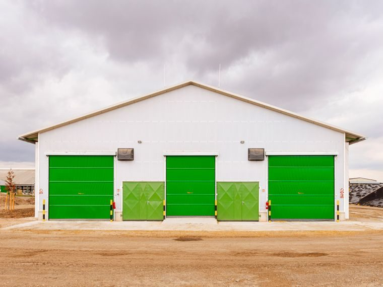

Produkt 01
Pro chov, který nesnese průvan.
Stájová vrata HAZE jsou základ welfare moderní stáje. Doraz po celém obvodu eliminuje průvan na úroveň, kterou stádo necítí. Pohon i ovládání volíme podle vašeho provozu - od jednoduché posuvné konstrukce po motorizovanou variantu s ovládáním z dojírny.
- KonstrukceOcelový rám, žárově zinkovaný nebo lakovaný práškově - korozivzdorný v podmínkách stájového provozu.
- ProvedeníPosuvná (vodorovně podél stěny) nebo křídlová (otevírací). Volíme podle dispozice a frekvence průjezdu.
- VýplňIzolační sendvičový panel, plný plech, nebo kombinace s polykarbonátovým průhledem. Na vyžádání zateplená verze.
- RozměryNa míru otvoru. Standardně realizujeme od 2 m do 8 m šíře, výška podle dispozice stavby.
- TěsněníPryžové po celém obvodu. Zachovává teplotu v zimě a brání průvanu - klíčové pro zdraví stáda a tepelný komfort.
- ObsluhaManuální (rolnové vedení) nebo motorická s ovladačem, volitelně s napojením na řízení dojírny nebo ventilace.
Pro koho
Tři typické provozy, tři odlišná zadání.
Kravín / dojnice
Welfare při dojení, klid stáda, doraz proti průvanu v zimě. Tichý chod pro stáda, která reagují na hluk poklesem výkonu.
Porodna
Klidné prostředí pro telení, ochrana telat před průvanem a chladem. Snadné otevírání pro veterinární zákroky.
Hala / sklad
Robustnost pro denní průjezd techniky, dlouhá životnost, krátké servisní intervaly. Ovládání z kabiny traktoru na vyžádání.
Realizace
Ukázky z naší vlastní montáže.

Vrata · Stáj
Posuvná stájová vrata

Komplet · Hala
Zemědělská hala, vrata + ventilace

Ventilace · Stáj
Boční ventilace stáje
Chcete konkrétní nabídku?
Zavolejte. Domluvíme zaměření.
Po-Pá 7:00-17:00. Konzultace zdarma, nabídka do 48 hodin.